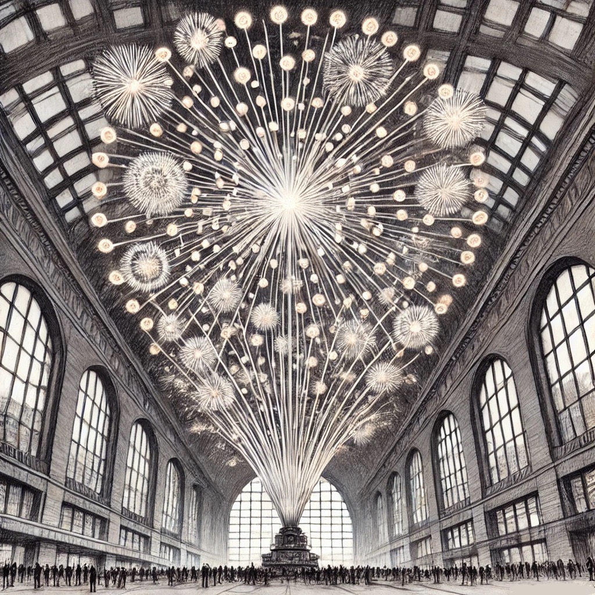
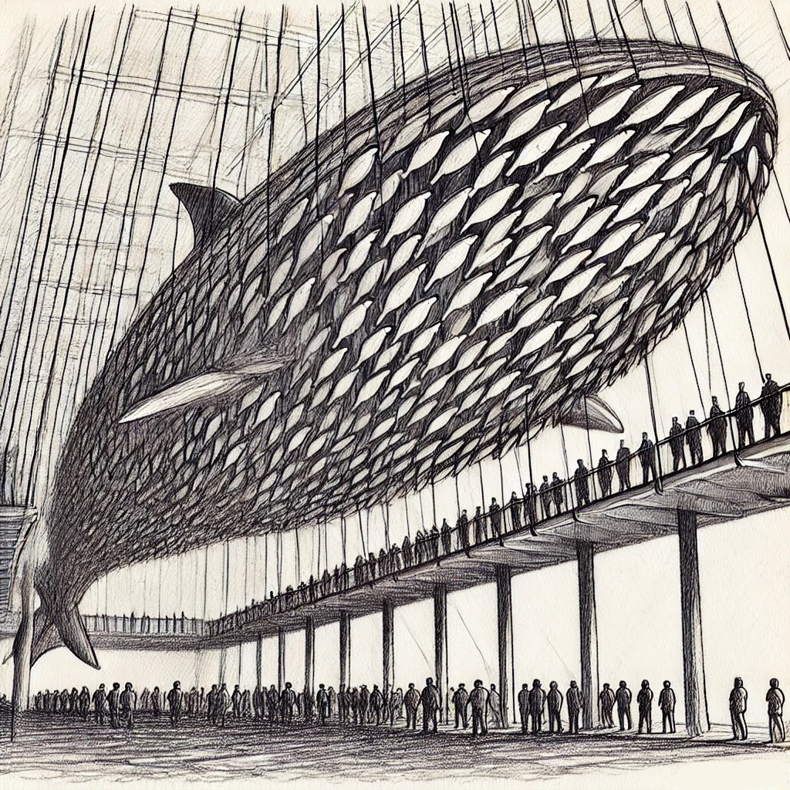
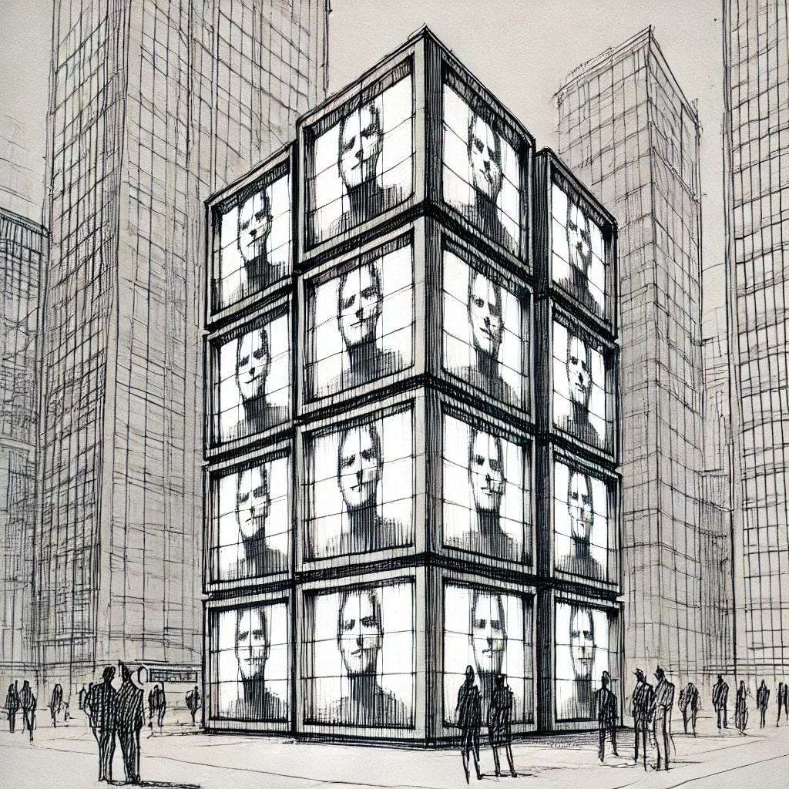

St. Louis is a city of transformation—of movement, perception, and reinvention. This proposal is not simply a collection of public art installations; it is a cohesive artistic vision that redefines how people experience the city.
These three works—The Finale, The Whale, and Photo Booth—are not separate projects. They are a trilogy of perception, scale, and spectacle that make the city itself feel alive. Each one exists only in the act of viewing—they demand movement, engagement, and shifting perspectives to be fully understood.
This is not static public art. This is a redefinition of how we see St. Louis.
Location
Open plaza at Union Station, positioned to align with the city skyline

Concept
A 50-foot-wide, 25-foot-tall neon firework explosion, suspended in the air, creating the illusion that a grand finale of fireworks is erupting over the entire St. Louis skyline.
Positioned perfectly within Union Station, the installation is designed to manipulate perspective: from the right vantage point, it appears as though fireworks are bursting above every skyscraper in the city. In reality, they are smaller, contained within the space of the plaza—but through placement and scale, they create an optical illusion of a never-ending citywide celebration.
Instead of symmetrical bursts, this firework is chaotic, layered, and dimensional—an intricate explosion of thousands of neon tubes, capturing the energy of a moment that should be fleeting but instead lasts forever.
Why This Works
- Plays with depth & illusion. From certain angles, it appears as if fireworks are lighting up the entire skyline.
- Captures a single moment forever. A firework is meant to vanish—here, it is permanent.
- Transforms Union Station into an event space. Every photo taken in the plaza will now feature this piece, making it instantly iconic.
Location
Suspended over the pedestrian bridge at the St. Louis Aquarium

Concept
An 80-foot-long whale that exists only from certain angles.
This massive sculpture is composed of razor-thin, two-dimensional metal minnows, all aligned in the same direction. From certain viewpoints, the whale appears to be fully visible—floating, suspended, undeniable. But from other angles, it completely disappears, as if it was never there.
This is a piece that refuses to be understood from a single vantage point. It forces movement, interaction, and discovery. It is a ghost, a mirage—a fleeting shape that is only whole for a moment, then gone again.
Why This Works
- It is an optical event. You don’t just look at it—you have to discover it.
- It changes as you move. The form is unstable, shifting, never fully present.
- It embodies transformation. The largest thing in the ocean is made of the smallest, and here, it barely exists at all.
Location
The side of a major building in downtown St. Louis

Concept
A massive, vertically stacked digital photo strip, made up of four enormous, 20-foot-tall screens, forming a towering, minimalistic public artwork.
This installation takes the familiar concept of a photo booth strip and elevates it to an urban scale. Visitors step into a small, unassuming booth, where a camera captures their images in four sequential frames. Instead of printing out a strip, their photos are instantly projected onto the towering digital screens above, broadcasting their expressions to the entire city.
The experience is fleeting yet monumental—for a brief moment, a visitor’s face becomes larger than life, as if printed across the skyline.
Why This Works
- It is an ultra-clean, iconic concept. Four screens. Four faces. That’s it. Minimal, powerful, and striking.
- It transforms personal moments into public art. Everyone who participates becomes a part of the cityscape.
- It is interactive in a way that feels inevitable. No gimmicks, no excess—just the pure act of visibility on a grand scale.
Why These Three Work Together
- They all demand movement. You cannot experience them fully without shifting your position.
- They all play with perception. They reveal, they disappear, they transform.
- They all push St. Louis forward. These are not passive monuments—they are acts of transformation.
Together, they turn Union Station and downtown St. Louis into living, shifting landscapes.